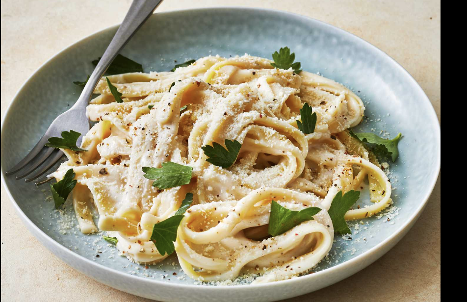

Pasta

Description
Pasta is a versatile and beloved dish made from unleavened dough, typically consisting of wheat flour and water, shaped into various forms like spaghetti, penne, or fusilli. It can be served with a myriad of sauces, from rich tomato and creamy Alfredo to light olive oil and garlic. Pasta can be paired with an array of ingredients, including vegetables, meats, and cheeses, making it adaptable to diverse culinary traditions. Whether enjoyed in a simple preparation or a gourmet recipe, pasta offers comfort and satisfaction in every bite.
Ingredients
- 1Pasta (your choice, e.g., penne, spaghetti, or fusilli) - 250 grams
- Olive oil - 2 tablespoons
- Garlic - 3 cloves, minced
- Onion - 1 medium, finely chopped
- Bell peppers - 1 cup, chopped (any color)
- Zucchini - 1 medium, sliced
- Mushrooms - 1 cup, sliced
- Cherry tomatoes - 1 cup, halved
- Spinach - 2 cups, fresh
- Italian herbs (basil, oregano, thyme) - 1 teaspoon each
- Red chili flakes (optional) - 1/2 teaspoon
- Salt and pepper - to taste
- Parmesan cheese (optional) - for serving
- Cook pasta in salted boiling water until al dente and drain.
- Sauté garlic and onion in olive oil until translucent.
- Add bell peppers, zucchini, and mushrooms, cooking until softened.
- Stir in cherry tomatoes and spinach until wilted.
- Combine cooked pasta with the sautéed vegetables, adding reserved pasta water if needed.
- Season with herbs, red chili flakes, salt, and pepper, then mix well.
- Serve with Parmesan cheese and garnish with fresh basil or parsley.